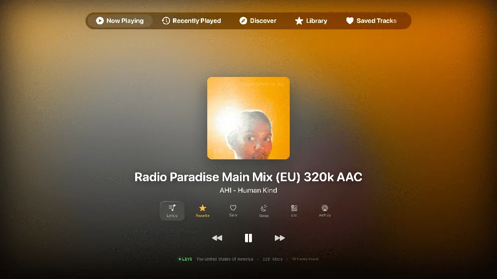
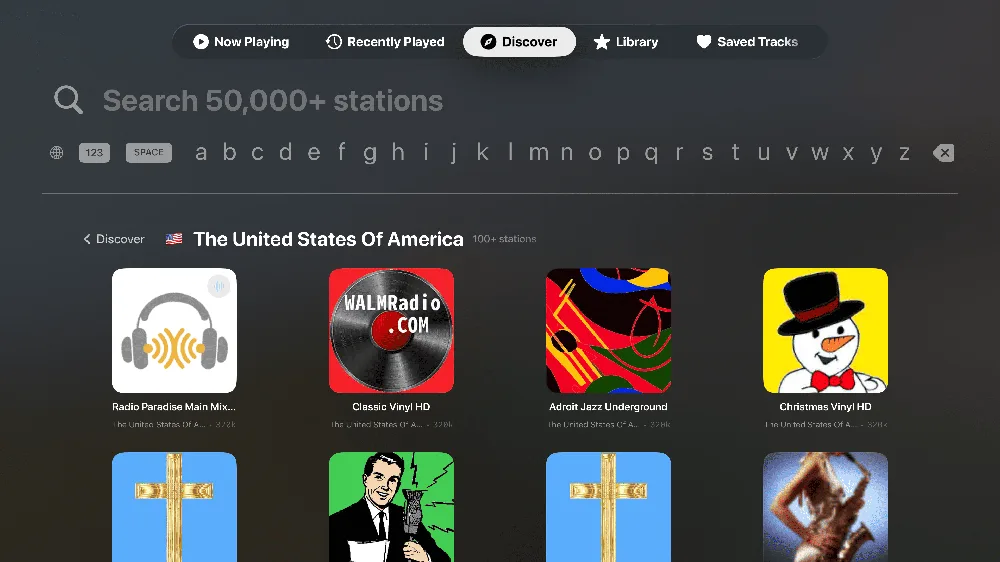
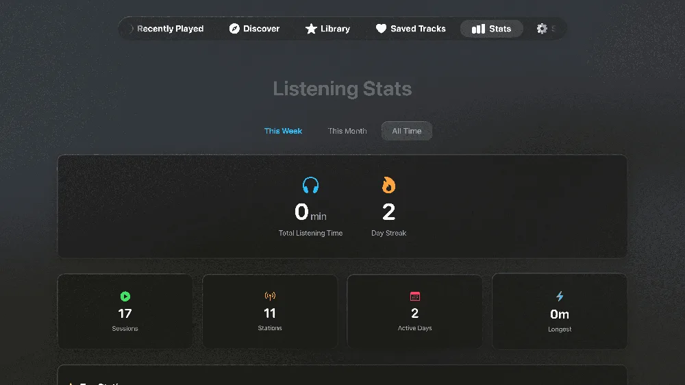

Top Shelf favorites
Your stations sit in the Apple TV Top Shelf with their logos. Two clicks from TV-on to music-playing.
Game controller support
PlayStation and Xbox controllers work out of the box, every key remappable. The Siri Remote can stay on the couch.
Big-screen Now Playing
Album artwork, live song identification and synced lyrics, designed for viewing from across the room.



Radio, made for television
Is there an internet radio app for Apple TV?
Yes. Macdio runs natively on tvOS and streams 55,000+ stations from around the world. Browse by country or genre, search, and keep favorites in folders that sync from your other devices.
Can I use a game controller?
Yes. PlayStation and Xbox controllers are fully supported, with remappable keys for browsing, switching stations and playback. It is the most comfortable way to drive a TV app.
Does it show what song is playing?
Yes. The station's own data, live song identification and synced lyrics come together on a Now Playing screen designed for the big screen, with saved songs syncing to your Apple Music favorites if you turn that on.
Do I need to buy it again for Apple TV?
No. One purchase covers Apple TV, iPhone, iPad, Mac and Apple Watch together. See Macdio for iPhone and Macdio for Mac.
Ready to tune in?
Get Macdio on the App Store and it appears on your Apple TV. No subscription, no ads, no tracking.